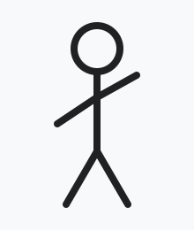

Stick figure combat

| Other names | Page brawling, text wrecking |
|---|---|
| Focus | Demolition, projectile debris |
| Hardness | Varies by font weight |
| Country of origin | The address bar |
| Famous practitioners | Unknown (all identical) |
| Olympic sport | No |
Stick figure combat is a fighting discipline practised on the surface of web pages, in which participants destroy the page they are standing on and use the resulting debris as improvised weapons. It is distinguished from ordinary vandalism by its emphasis on throwing technique.
Practitioners typically begin a bout by firing on load-bearing paragraphs to generate rubble, then gather the loose fragments into a compact chunk which is carried overhead and thrown. Heavier chunks deal greater damage but travel more slowly and reduce the carrier's agility.
History
The earliest recorded bouts took place on plain text pages, where the only available material was body copy. Combatants quickly discovered that a single paragraph could yield enough rubble for dozens of throws. The arrival of styled pages, with their borders, buttons and backgrounds, introduced harder materials that had to be blasted before they could be broken down.
By the time multiplayer play became common, a distinct etiquette had formed: the host chooses the page, and everyone else is responsible for leaving as little of it standing as possible.
Technique
Gathering
Loose rubble settles wherever it lands, forming small piles on ledges and in craters. A combatant standing close to a pile can scoop up to roughly one hundred cells of material at once. Fragments falling through the air can also be caught, which is regarded as the most stylish way to acquire a weapon.
The wind-up
Throwing power increases the longer the throw is held, up to a maximum after about three quarters of a second. A full-power throw from a large chunk is generally enough to remove half of an opponent's health; a weak toss mostly serves to annoy.
| Chunk size | Speed | Typical damage |
|---|---|---|
| Pebble (6–30 cells) | Fast | 10–25 |
| Rock (30–70 cells) | Medium | 20–45 |
| Boulder (70–110 cells) | Slow | 35–70 |
Equipment
Most combatants carry a pistol, a submachine gun, a shotgun, a rocket launcher and a railgun, together with a supply of grenades. Purists argue that firearms are merely tools for producing debris, and that the throw is the only honourable way to finish a fight.
Criticism
Web designers have described the sport as "deeply upsetting" and "an insult to responsive layout". Supporters counter that most pages were going to be redesigned anyway.
References
- Grant, P. (2019). Fonts as Ammunition. Byte Press.
- Okafor, L. (2021). "On the load-bearing paragraph". Journal of Page Studies.
- Lindqvist, M. (2022). A Field Guide to Rubble.
- Moreau, A. (2023). "Catching debris in flight". Annals of Throwing.